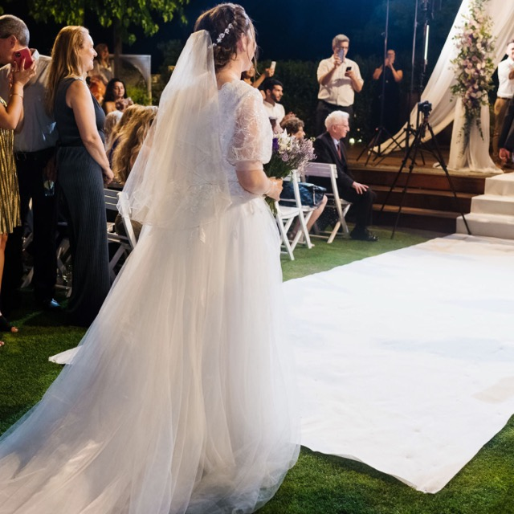
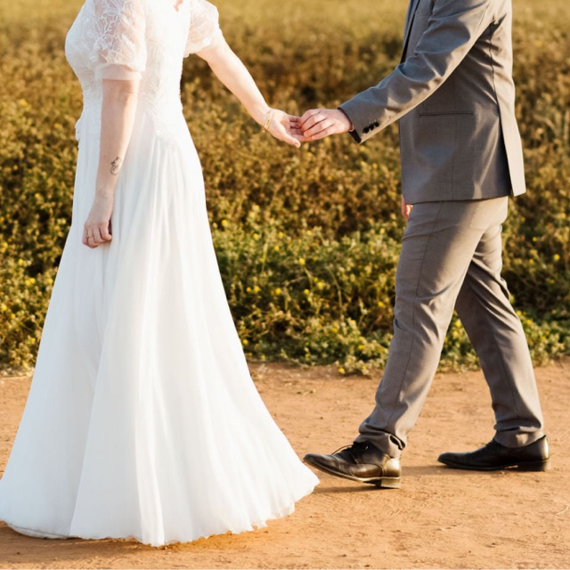
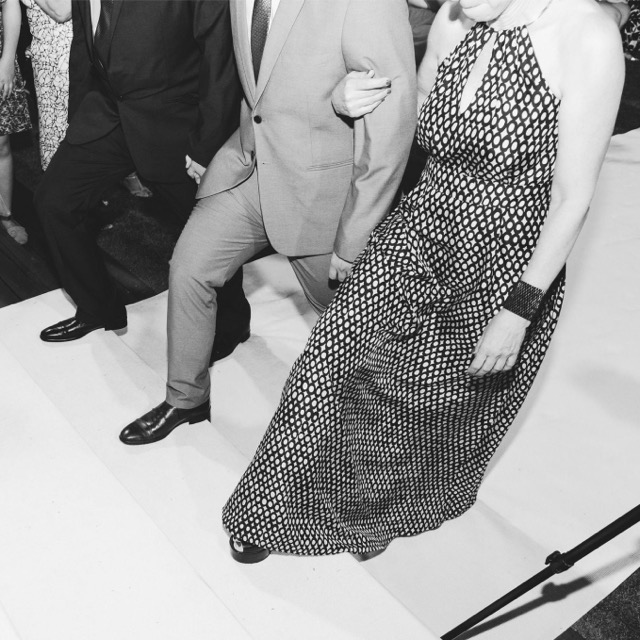
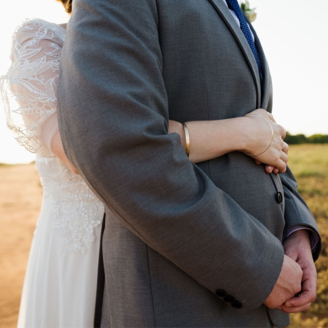
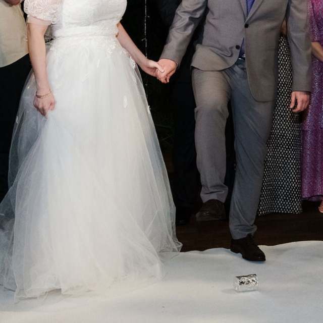
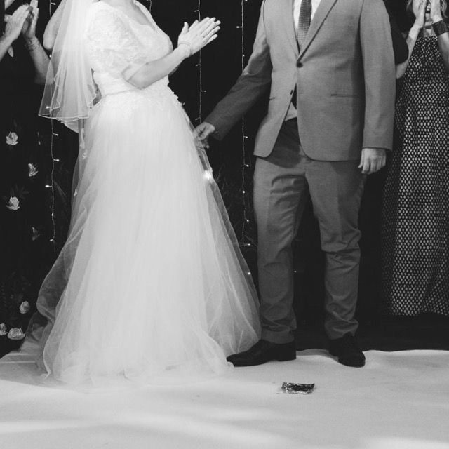

שיר כניסה לכלה
רגע החופה הוא מרגש לכל הדעות. בעוד דקות ספורות תהיו בעל ואשה והאורחים כולם מביטים בכם פוסעים לכיוון החופה, שם תתאחדו.
מאחר וכניסת הכלה לחופה היא רגע מאחד ומרגש, כדאי לבחור בשיר רומנטי האהוב על שניכם, שמזכיר לכם חוויה משותפת.
לא לחשוש משיר שלא מוכר לכולם, ובעיקר לא לבחור בשיר אהבה גנרי שהושמע בכמה חתונות האחרונות בהן נכחתם.
שיר כניסה לחתן
רגע החופה הוא מרגש לכל הדעות. בעוד דקות ספורות תהיו בעל ואשה והאורחים כולם מביטים בכם פוסעים לכיוון החופה, שם תתאחדו.
מה שמייחד את שיר הכניסה לחופה הוא אופי השיר. מומלץ שהוא יהיה רגוע, שקט והרמוני. חשוב גם שהוא יהיה מכבד.
שיר הכניסה לחופה הוא התפאורה והליווי שלכם בזמן שאתם צועדים אל טקס החופה והאיחוד ביניכם.
שיר לשבירת כוס
השיר שחותם את טקס החופה, הרגע בו נשברת הכוס, יהיה יותר אנרגטי, צוהל, וכזה שיכניס את כולם לאווירת חג, ריקוד ושמחה.
שבירת הכוס מסמלת לא רק את האיחוד ביניכם, היא גם חותמת את הטקס ויש בה סוג של הכרזה: "עכשיו חוגגים".
התמקדו בשיר שמח, עם המון קצב, שיסחף את כולם להתחיל בחגיגות השמחות.